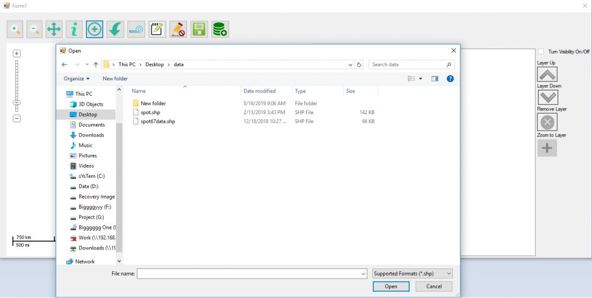
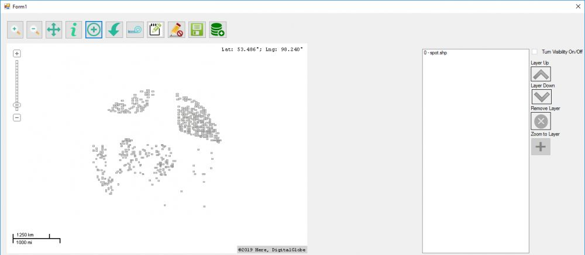
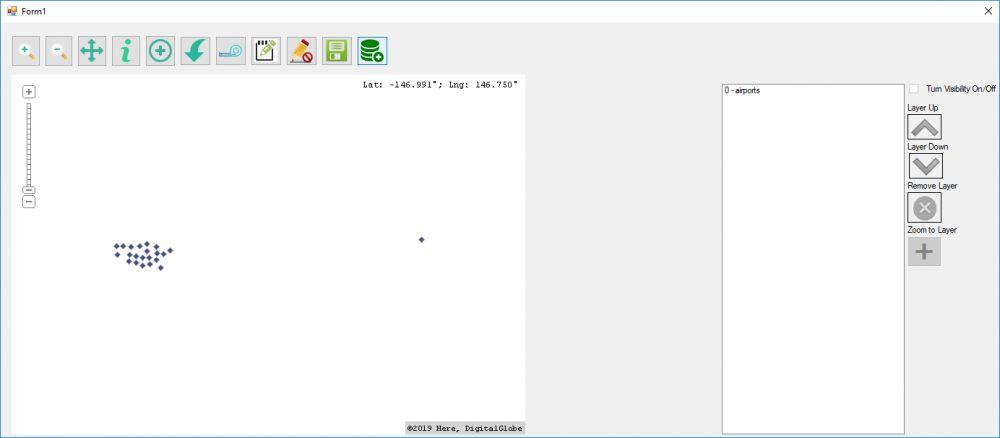
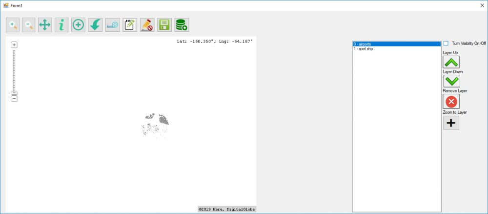
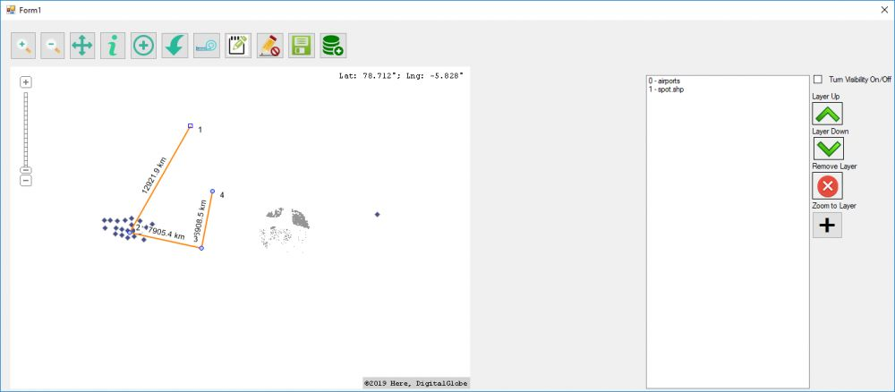

<div class="container">
    <div class="row topspace">
        <article class="col-sm-8 maincontent">
            <div class="your-class">
                <div></div>
                <div></div>
                <div></div>
                <div></div>
                <div></div>
            </div>
            <br>
            <p>In 2017, I won this project in my freelance career to build a map based GIS solution using mapwingis library for replicating basic gis base spatial operations.</p>
            <br>
            <p>Project involved creteing a GUI based C# desktop app that would do some tasks like: 1) Load layer from Postgresql Database  2) Load WMS Layer from Geoserver preferably 3) Load Shapefiles 4)Edit loaded Shapefiles 5)Save Updated Shapefiles 6) Show Attribute table 7) Measure Control 8)And a simple custom built Layer Control Panel for some normal operations like, move up or down, remove layer, visibility on/off and zoom to the extent</p>
            <br>
            <p>This was a freelance project that I won over Upwork as a freelancer and developed the portal from scratch
                to top & deployed it over hosting server of the client.</p>
        </article>
        <aside class="col-md-4 sidebar sidebar-left">
            <div class="widget">
                <ul class="list-group">
                    <li class="list-group-item pull-left">
                        <h4 class="custom-subsubheader">Freelance Project</h4>
                        <p><strong>2017</strong></p>
                    </li>
                </ul>
            </div>
        </aside>
    </div>
</div>